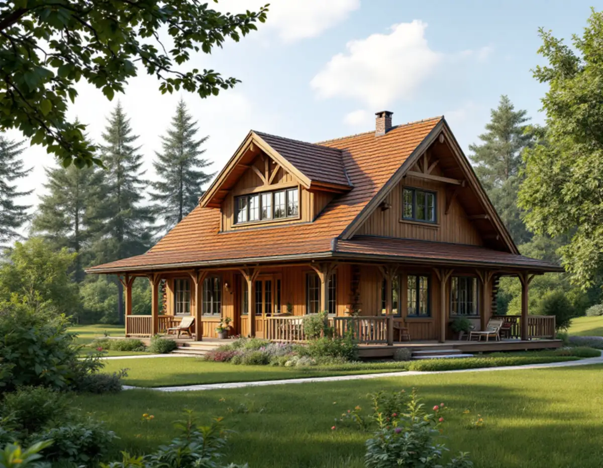
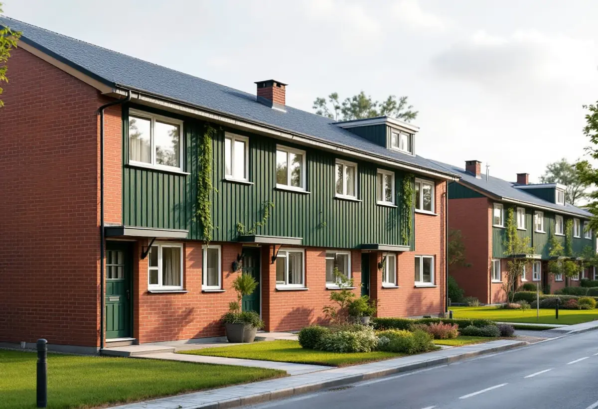
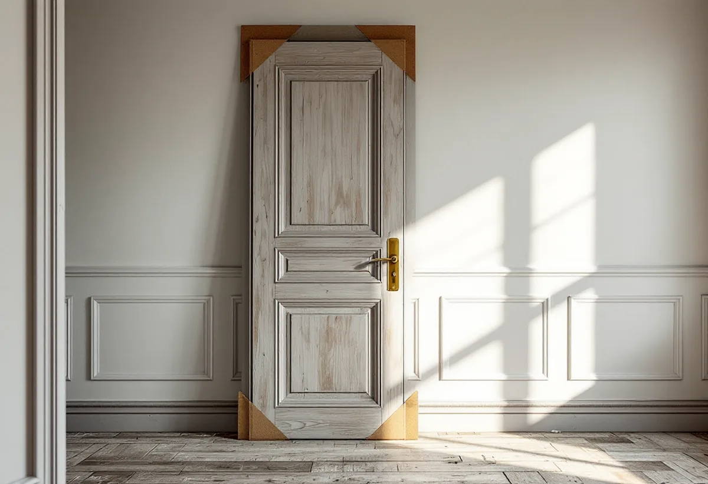

Platsbesök
Gratis besök där vi går igenom huset och dess ursprungliga detaljer.
Upplands Väsby har både äldre villor från tiden före 1960 och stora grupper av radhus och kedjehus från 1960- och 70-talen. Geal Entreprenad AB renoverar hela huset med kommunens kunskapsunderlag för kulturmiljö som stöd, så att det som gör husen typiska finns kvar.

Kommunens kunskapsunderlag för kulturmiljö beskriver de äldre villaområdena som friliggande hus i stora trädgårdar, ofta i 1,5–2 våningar med sadeltak eller brutet sadeltak och fasader i träpanel. Spröjsade fönster, verandor, utanpåliggande trappor och snickarglädje är återkommande, och i egnahemsområdena låg ofta standardiserade ritningar till grund. Som exempel nämns Runby egnahemsområde, Åsvägen–Lövvägen och villaområdena kring Sandavägen.
Underlaget ger också råd: undvik förhöjda väggliv, frontespiser och större takkupor som bryter mot villans ursprungliga volym. För en totalrenovering betyder det att mer boyta oftast får hittas inne i huset – i en omdisponerad planlösning eller en bättre utnyttjad vind – snarare än genom att lyfta taket.

De östra kommundelarna har enligt underlaget vuxit fram med många småhus och radhus i separata enklaver längs säckgator. Husen har enkla volymer i en eller två våningar, platta eller flacka tak, enluftsfönster utan spröjs och infällda balkonger. Rött tegel, vitt kalkcementtegel och målad träpanel i starka kulörer är de vanligaste materialen. Exempel finns i Sjukyrkoberget, Skälby, Fresta och Odenslunda.
Underlaget betonar att grupperna är enhetligt utförda och råder fastighetsägare att undvika tillbyggnader som bryter ursprungsvolymen. En totalrenovering av ett radhus börjar därför inifrån: badrum, kök, installationer och planlösning. Fönster, fasadmaterial och kulörer håller vi lika med grannarnas.
Upplands Väsby kommun påpekar att varsamhetskravet och förvanskningsförbudet i plan- och bygglagen alltid gäller, inom och utom detaljplan, och att kraven gäller invändiga och utvändiga åtgärder – även sådana som inte kräver lov eller anmälan. En byggnad behöver inte vara utpekad i förväg för att vara värdefull. Kommunen nämner till exempel hus som är byggda före 1920 och har kvar sin karaktär.
I praktiken betyder det att vi dokumenterar fasta inredningar, dörrar, lister och trappor i ett äldre hus innan rivningen och föreslår vad som kan sparas. Är du osäker på om huset är särskilt värdefullt kan kommunen svara på vad som gäller för fastigheten.
Görs dräneringen om i samband med renoveringen gäller kommunens regler för ledningsnätet. Dagvatten och dräneringsvatten får inte kopplas till spillvattenservisen, och eget vatten får inte kopplas ihop med kommunens. Förbindelsepunkten mot det allmänna nätet ligger vanligtvis ungefär en halv meter utanför fastighetsgränsen, och var ledningarna går utanför tomten kan beställas via Ledningskollen.
Vi kontrollerar hur husets avlopp och dagvatten är kopplade innan vi bygger om badrum och tvättstuga. Badrummet för sig beskriver vi under badrumsrenovering i Upplands Väsby och köket under köksrenovering i Upplands Väsby.

Gratis besök där vi går igenom huset och dess ursprungliga detaljer.
Det som ska sparas fotograferas och märks.
Planlösning, installationer och eventuell anmälan.
Varsam rivning av det som ska bort.
El, VVS och ventilation byggs om.
Golv, väggar, kök och bad, sedan gemensam besiktning.
I ett småhus räknar Skatteverket bland annat rivning av väggar, ny planlösning, tilläggsisolering, kakel och klinker och andra förbättringsarbeten som rotarbete. Avdraget gäller arbetskostnaden, inte material och resor.
Avdraget är högst 30 procent av arbetskostnaden och högst 50 000 kronor per person och år. Äger ni bostaden två kan båda göra avdrag. Där avdraget gäller drar Geal det direkt på fakturan.
Husets ålder och storlek, hur mycket av inredningen som ska sparas, om planlösningen ändras, el- och VVS-arbetets omfattning och om dräneringen görs om. Efter ett gratis platsbesök får du ett skriftligt kostnadsförslag.
Renovera hela huset eller lägenheten.
Villarenovering →Takbyte, takbesiktning och plåtarbeten.
Takläggare i Upplands Väsby →Bollstanäs, Vilunda och Runby.
Takrenovering i Upplands Väsby →Potten, VA-avgiften och Bollstanäs.
Attefallshus i Upplands Väsby →Radhus, suterräng och samfälld VA.
Badrumsrenovering i Upplands Väsby →Karta, VA och tomtgräns.
Byggföretag i Upplands Väsby →Sekelskiftesvillorna längs Gamla vägen.
Fasadmålning i Upplands Väsby →Radhus från 70-talet och hus från bomässan.
Fasadrenovering i Upplands Väsby →Inflygning, trafik och tystare fönster i Väsby.
Fönsterbyte i Upplands Väsby →Kedjehusens fönster, kulör och beslag.
Fönsterrenovering i Upplands Väsby →Kedjehus, suterräng och radon.
Golvläggare i Upplands Väsby →Slipa trägolvet i radhuset på platta.
Golvslipning i Upplands Väsby →Radhus, kedjehus och atriumhus.
Köksrenovering i Upplands Väsby →Radhus, kedjehus och villor i Väsby.
Målare i Upplands Väsby →Rännor, stuprör och radhusplåt i Väsby.
Plåtslagare i Upplands Väsby →Altan, plank och förråd vid radhus och kedjehus.
Snickare i Upplands Väsby →Nytt tak, solceller och väderradarn.
Takbyte i Upplands Väsby →Radhusen och plasttapeten.
Tapetsering i Upplands Väsby →Radhus, kedjehus och utpekade områden.
Tillbyggnad i Upplands Väsby →